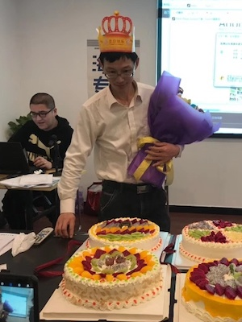

用户画像
张歆琪
活在当下，快乐最重要
• 28岁，大学本科毕业，现居上海
• 目前是某银行人事，有一个交往1年的男朋友
• 喜欢音乐、电影、阅读
• 每天上下班的地铁上会用微信读书读一些小说。在家的时候，常在睡前阅读一小时纸质书，感觉纸质书更有质感，读完感觉充实
• 两个月左右会去一次图书馆，借三本书：中国文学、外国文学、社科各一本，续借频率较高。平时看到想读的书会单独记录下来，到图书馆的时候再查询

杨健
平平淡淡才是真
• 39岁，大学本科毕业，现居成都
• 公务员，有一个已经10岁的女儿（小学4年级）
• 喜欢跑步，看新闻、读书
• 平时会在手机上看一些新闻及新媒体文章。阅读上倾向于纸质书，读完后感觉满足，同时纸质书也有利于家人阅读
• 周末偶尔会带着女儿去逛图书馆，参加活动。一些无法购买到的图书，也会前往图书馆借阅
张博远
stay hungry，stay foolish
• 29岁，图书馆档案学硕士，目前在杭州某图书馆就职
• 阅读经常使用kindle或者从图书馆借书
• 喜欢阅读、摄影、健身、音乐
• 经常会处理读者的咨询问题。常见的有：图书馆最近有什么活动、借还书的具体操作、图书馆开闭馆时间

李惠
微笑面对人生
• 33岁，大学本科毕业，现居贵阳
• 培训机构音乐老师，有一个7岁的儿子
• 喜欢音乐、散步
• 更喜欢实体书，可以和孩子一起看，也更健康
• 去图书馆借书频率高，多是一些绘本等，会经常和孩子一起去参加图书馆举办的亲子阅读活动

赵牧阳
心有山海，眼有星辰
• 25岁，大学本科毕业，现居杭州
• 目前从事新媒体运营
• 喜欢篮球、电影、旅游
• 更倾向于电子书，常使用kindle看书
• 休息期间，会不定期去图书馆查资料，会提前在豆瓣上将所需要的图书收集好，然后去图书馆检索